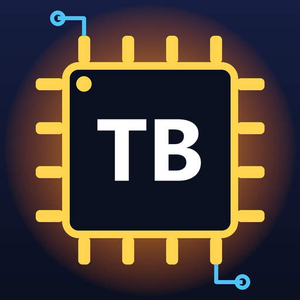
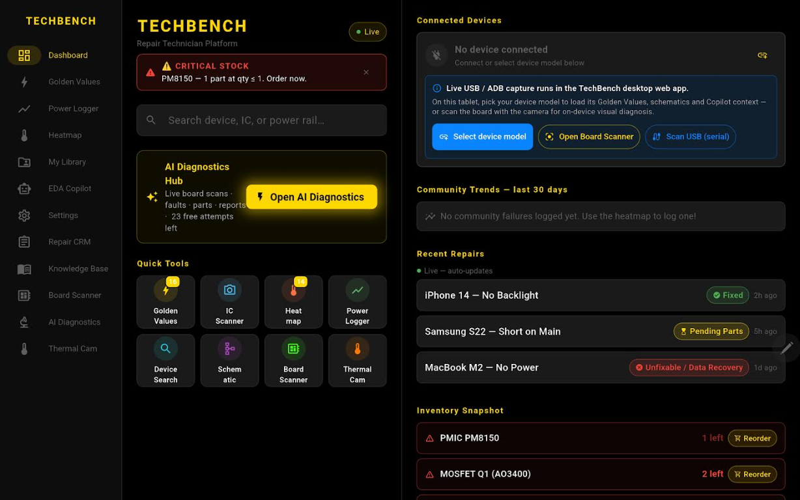
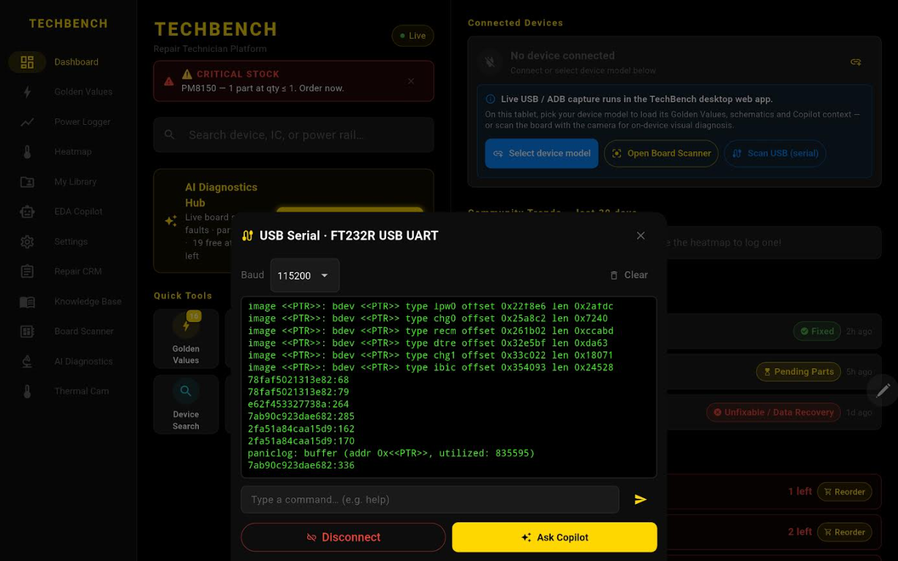
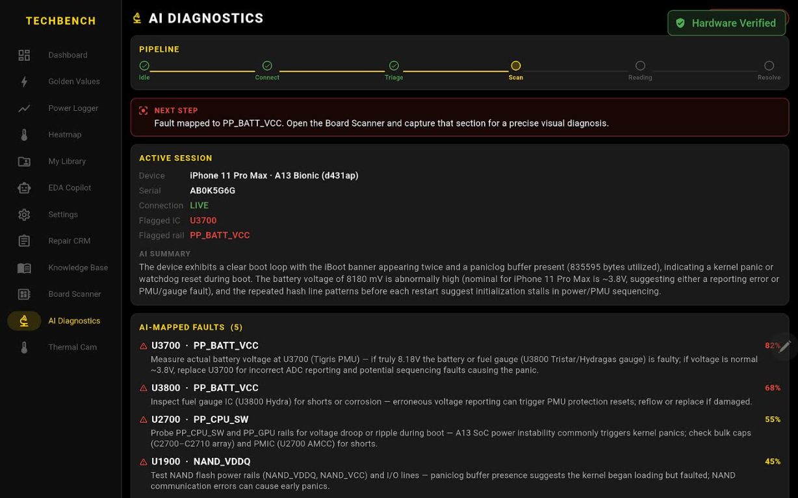
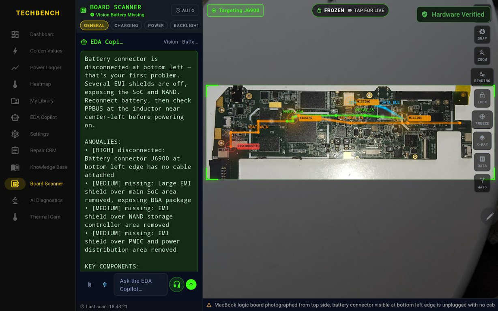
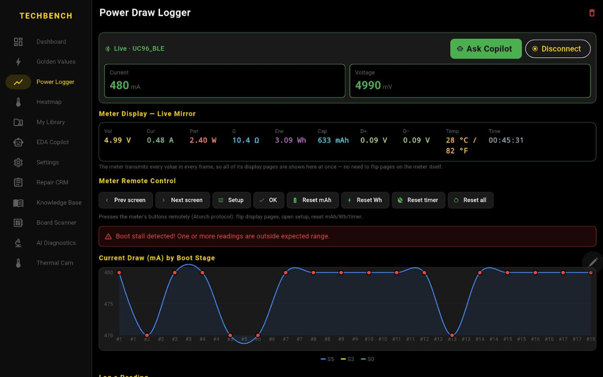

TechBench: Electronics Repair
The complete diagnostics hub for electronics repair technicians: board scanner, golden values, power logger, thermal camera, UART triage, repair CRM, knowledge base and an EDA Copilot. Available in 16 languages.
📱 Get it on Google Play 💻 Download for Windows (1.0.2)Android: install from Google Play (phones, tablets and foldables, Android 7.0+). In-app Pro unlock available.
Windows: extract the zip and run techbench.exe ("More info → Run anyway" if SmartScreen appears).
All releases & changelog
See it in action
What technicians get
- Golden Values – expected voltages and diode readings for every power rail, per device model.
- Board Scanner – point the camera at a logic board to spot missing shields, loose connectors and burnt parts.
- UART triage – read the boot log live and get a ranked list of suspect components.
- Power Logger – USB meter current draw by boot stage, with stall and loop detection.
- Heatmap & Thermal Camera – common-failure maps and live hotspot tracking.
- Repair CRM, Knowledge Base, private schematic library – your shop data, injected into the Copilot.
Screenshots




